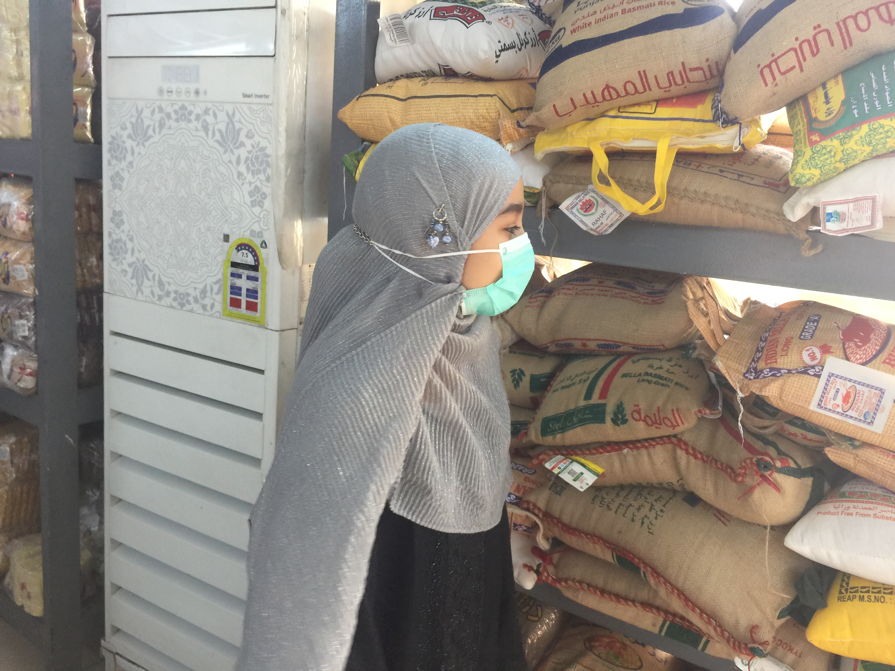
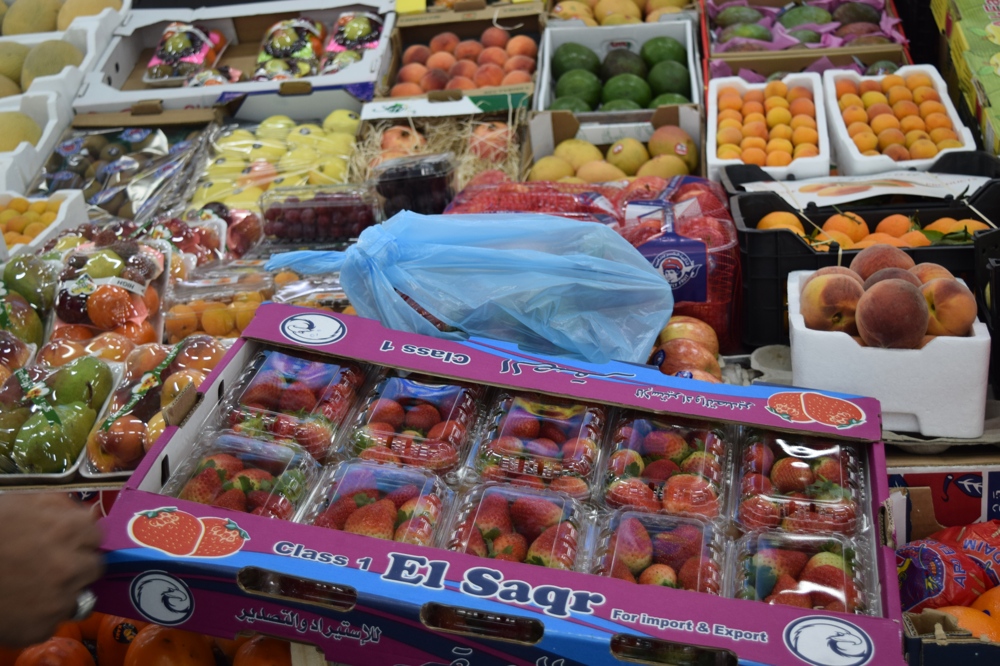
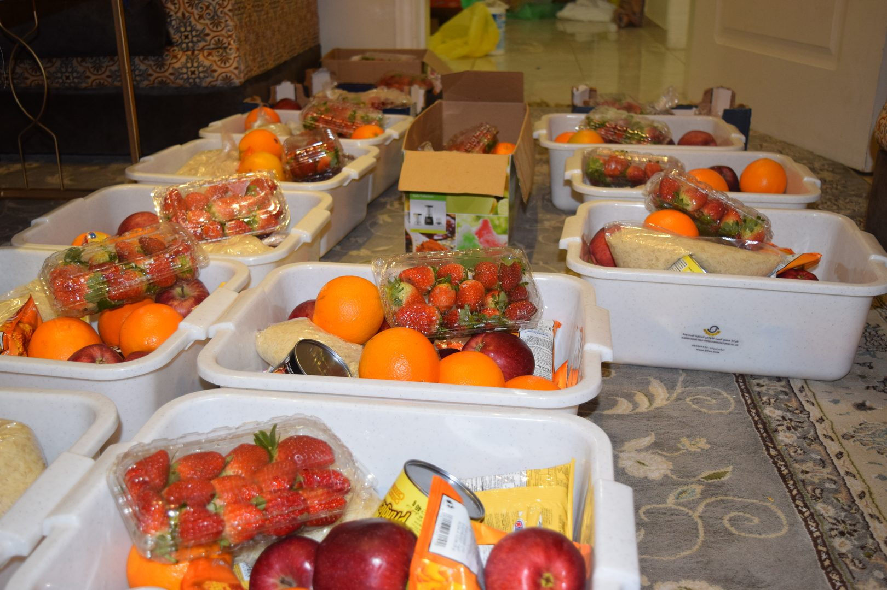

Proof of Concept · Food & Community
Assembling and distributing food boxes to families in need — organized, planned, and carried out by one student.




Food insecurity is easy to overlook when it's not your family going to bed hungry. The student behind this project chose to look closer — and what the student found was that hunger isn't abstract. It's neighbors. It's families a few streets over who don't always know where the next meal is coming from.
The question the student started with: what can one kid actually do about this? The answer was surprising.
The student began by researching the issue — understanding what food insecurity looks like locally, what resources existed, and what was missing. From there, a practical solution took shape: assemble food boxes filled with non-perishable essentials and deliver them to families who needed them.
This meant sourcing supplies, organizing packing, and coordinating delivery. Every step was planned and executed by the student — not by adults.
The boxes were assembled, packed, and delivered. Families received them. The project worked — not because it was perfect, but because the student showed up, adapted when things didn't go to plan, and finished what was started.
At the final presentation, the student shared not just what was done, but what was learned: about hunger, about logistics, about working through setbacks, and about what it feels like to actually help.
As part of the project, the student also made a short documentary — covering both the process of assembling and delivering the boxes, and the broader reality of hunger in the community. It was screened at the final presentation.
This project isn't presented as the answer to hunger. It's presented as evidence of something more important: that kids can identify a problem, build a plan, execute it, and make a real impact. That's the skill Change Makers is built to develop. The problem they chose matters less than the fact that they chose it — and then they did something about it.
Want your child to do something like this?
Change Makers gives kids the structure, support, and space to run their own project — on a problem they actually care about.
Apply for Summer 2026 →